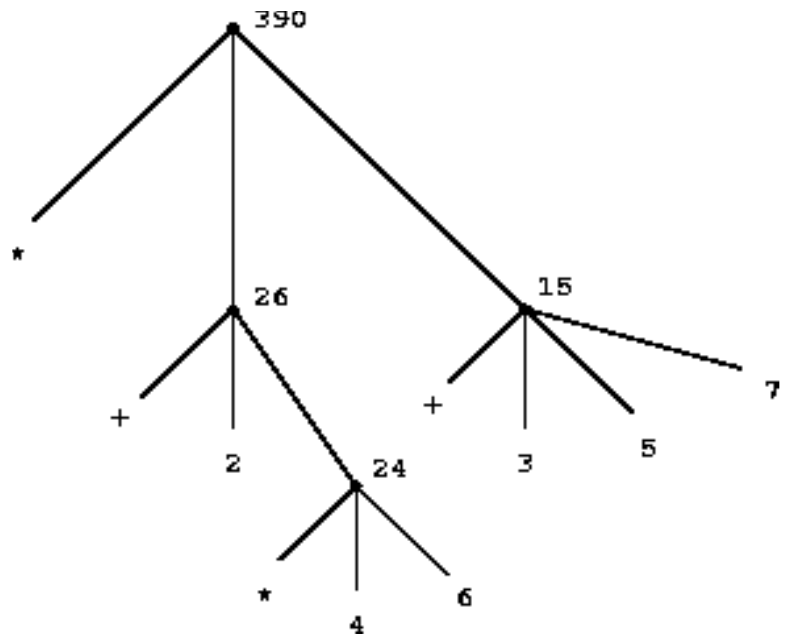
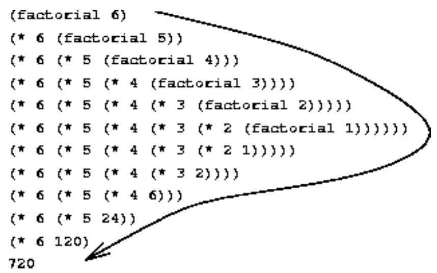
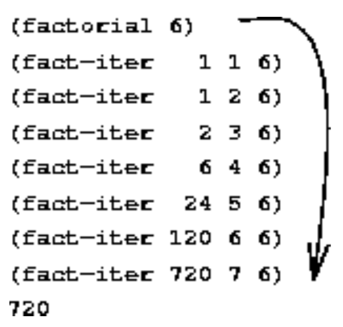

SICP Notes
Table of Contents
- 1. Building Abstractions with Procedures
- 1.1. The Elements of Programming
- 1.1.1. Expressions
- 1.1.2. Naming and the Environment
- 1.1.3. Evaluating Combinations
- 1.1.4. Compound Procedures
- 1.1.5. The Substitution Model for Procedure Application
- 1.1.6. Conditional Expressions and Predicates
- 1.1.7. Example: Square Roots by Newton's Method
- 1.1.8. Procedures as Black-Box Abstractions
- 1.1.9. Summary
- 1.2. Procedures and the Processes They Generate
- 1.1. The Elements of Programming
These notes are my work-through of Structure and Interpretation of Computer Programs
(SICP)1.
1 Building Abstractions with Procedures
1.1 The Elements of Programming
A programming language can be seen as a tool to express complex ideas based on building up primitive expressions into compound expressions by combination and abstracting these by naming them and manipulating these named units. These elements can be further broken down into two categories: data, i.e. `stuff'; and procedures, the rules for manipulating `stuff'.
1.1.1 Expressions
Perhaps the most primitive expression is a number, e.g. entering 10 in a REPL will return 10.
Combining these primitives with primitive procedures such as + or * results in a compound expression
for example:
(+ 137 349)
These compound expressions are referred to as combinations and take the form:
(operator operand1 operand2 ... operandn)
returning the value of applying the procedure defined by the operator to the arguments that are the values of the operands.
1.1.2 Naming and the Environment
In order to abstract ideas, it must be possible to associate a name with an object: the name
identifies a variable whose value is the object.
Here arises one of the differences between Scheme and Common LISP: Scheme is a LISP-1 having only
one namespace so the same operator define suffices to create variables and operators whereas Common
LISP is a LISP-2 with separate namespaces for operators and variables, created by defun and defvar
respectively, for example contrast Scheme
(define pi 3.14159) (define radius 10) (* pi (* radius radius))
with Common LISP 2
(defconstant +PI+ 3.14159) (defvar *radius* 10) (* +PI+ (* *radius* *radius*))
The ability to abstract compound operations is key to the utility of a programming language, allowing
complex programs to be constructed as a series of computational objects of increasing complexity.
This approach is facilitated by the REPL allowing incremental development and
testing.3
Maintaining these symbol->value associations requires some form of memory, known as the environment
(specifically the global environment for these top-level forms).
1.1.3 Evaluating Combinations
As an example procedure, consider that when the interpreter evaluates a combination, it is itself following a procedure:
- Evaluate the subexpressions of the combination.
- Apply the procedure that is he value of the leftmost subexpression (the operator) to the arguments that are the values of the other subexpressions (the operands).
The above procedure is recursive, it calls itself as one of the steps. Recursion is very powerful, allowing what would, in the case of deeply nested combinations, to be expressed in a comparatively clear manner. For example, evaluating
(* (+ 2 (* 4 6)) (+ 3 5 7))
requires that the evaluation rule be applied to four different combinations. This process can be visualised in the form of a tree fig. 1 where each leaf represents a combination with branches to its operator and operands stemming from it with terminal nodes represent either operators or values. To evaluate a node, apply the operator coming from its left branch to the operands coming from each other branch, essentially information travels upwards from the terminal nodes4.

Figure 1: Tree representation of evaluation rule.
So, as can be seen, each node is evaluated by recursively applying the evaluation rule to each branch until a terminal node is reached at which point its value is applied/operated upon.
1.1.4 Compound Procedures
In the previous section primitive data and procedures were introduced by way of numbers and
arithmetic operations, nesting of which allows operations to be combined and by defining variables,
a limited form of abstraction.
For example, in computing the circumference of a circle, the radius must be squared.
More useful than writing out (* r r) whenever this is necessary would be to express the idea of
squaring as to multiply something by itself.
In Scheme this is expressed as
(define (square x) (* x x))
or, equivalently in Common LISP as
(defun square (x) (* x x))
here we can see the difference between Scheme as a LISP-1 and Common LISP as a LISP-2, we need to
tell Common LISP the name square is a function object, not a variable, whereas this distinction
does not exist in Scheme.
To analyse square it can be seen that something x is passed to the function and it multiplied by
itself is returned.
Naturally square can be used to build more complex expressions, for example, \(x^2+y^2\) can be
expressed as
(+ (square x) (square y))
or better still:
(defun sum-of-squares (x y) (+ (square x) (square y))) (sum-of-squares 3 4)
and so forth.
1.1.5 The Substitution Model for Procedure Application
As a model for how the interpreter operates, consider the function f:
(defun f (a)
(sum-of-squares (+ a 1)
(* a 2)))
To evaluate such a compound procedure, the substitution model evaluates the body of the procedure
with each parameter replaced by the corresponding argument.
For example, (f 5) would be evaluated by first retrieving the body of f:
(sum-of-squares (+ a 1) (* a 2))
and replacing the parameter a by the argument 5:
(sum-of-squares (+ 5 1) (* 5 2))
yielding three subproblems: (+ 5 1), (* 5 2) and the application of sum-of-squares to the results.
Evaluating (+ 5 1) and (* 5 2) and substituting into the body of sum-of-squares reduces the
expression to
(+ (square 6) (square 10))
With the definition of square:
(+ (* 6 6) (* 10 10))
which reduces to:
(+ 36 100)
which, as it is composed of only primitive operations and variables can be evaluated to yield 136.
It is important to note that the substitution model is a model:
- It is not how a typical interpreter would evaluate the procedure by manipulating the text as outlined above.
- Over the course of this, a sequence of increasingly elaborate models of how interpreters work will be explored, culminating with a complete implementation of an interpreter and compiler in chapter 5 - the substitution model serves only as a first simplified model.
- Applicative Order Versus Normal Order
Based on the description of the evaluation tree fig. 1 the interpreter first evaluates the operator and operands, then applies the resulting procedure to the resulting arguments. An alternative would be to not evaluate the operands until their values are needed, instead the interpreter would substitute operand expressions for parameters until an expression consisting of solely primitive expressions is obtained which can then be evaluated. Thus
(f 5)would first be expanded as:(sum-of-squares (+ 5 1) (* 5 2)) (+ (square (+ 5 1)) (square (* 5 2))) (+ (* (+ 5 1) (+ 5 1)) (* (* 5 2) (* 5 2)))
which then reduces to
(+ (* 6 6) (* 10 10)) (+ 36 100)
The result is the same as the previous model of evaluation but results in a different process: in particular,
(+ 5 1)and(* 5 2)are evaluated twice.This fully expand then reduce evaluation method is known as normal-order evaluation as opposed to the evaluate arguments and then apply method that the
Schemeinterpreter actually uses5, called applicative-order evaluation. It can be shown that for procedure applications that can be modelled using substitution and yield legitimate values, normal-order and applicative-order evaluation produce the same value - this is not necessarily true in the case of an illegitimate value where the two will not produce the same result.
1.1.6 Conditional Expressions and Predicates
In order to make a test and perform different operations depending on the tests result, some form of
conditional expression is required.
In LISP this is achieved by the cond form, for example, the absolute value of a number could be
expressed as
(defun sicp-abs-1 (x)
(cond ((> x 0) x)
((< x 0) (- x))
(t 0)))
it takes the form: (cond (<p1> <e1>) (<p2> <e2>) ... (<pn> <en>)) where each clause (<pn> <en>)
consists of a predicate, i.e. an expression returning true or false, and an expression which is
evaluated only if the predicate is true.
Evaluation falls down the clauses until a predicate evaluating as true is found, its corresponding
expression is then returned as the value of the conditional expression.
Of course, the absolute value procedure could be reduced to a single test by noting that the
absolute value of any real number greater than or equal to zero is itself and itself negated
otherwise:
(defun sicp-abs-2 (x)
(if (< x 0)
(- x)
x))
where (if <pred> <then> <else>) is a special form of cond where the then expression is returned if
the predicate is true or the else expression if the predicate is false.
- Exercise 1.1
Below is a sequence of expressions. What is the result printed by the interpreter in response to each expression? Assume that the sequence is to be evaluated in the order in which it is presented.
10
(+ 5 3 4)
(- 9 1)
(/ 6 2)
(+ (* 2 4) (- 4 6))
(defvar *a* 3)
(defvar *b* (+ *a* 1))
(+ *a* *b* (* *a* *b*))
(= *a* *b*)
(if (and (> *b* *a*) (< *b* (* *a* *b*))) *b* *a*)(* (cond ((> *a* *b*) *a*) ((< *a* *b*) *b*) (t -1)) (+ *a* 1)) - Exercise 1.2
Translate the following expression into prefix form
\begin{equation} \frac{5 + \frac{1}{2} + \left( 2 - \left( 3 - \left( 6 + \frac{4}{5} \right) \right) \right)}{3 \left( 6 - 2 \right) \left( 2 - 7 \right)} \end{equation}(/ (+ 5 (/ 1 2) (- 2 3 (+ 6 (/ 4 5)))) (* 3 (- 6 2) (- 2 7)))
- Exercise 1.3
Define a procedure that takes three numbers as arguments and returns the sum of the squares of the two larger numbers.
(defun sicp-1.3 (a b c) "Returns the sum of the square of the larger two numbers of a, b and c." (+ (square (max a b c)) (square (- (+ a b c) (max a b c) (min a b c))))) ;; Test the operation of sicp-1.3 (sicp-1.3 1 2 3) - Exercise 1.4
Observe that our model of evaluation allows for combinations whose operators are compound expressions. Use this observation to describe the behaviour of the following procedure:
(defun (a-plus-abs-b a b) ((if (> b 0) + -) a b))
Translated into
Common LISP:(defun a-plus-abs-b (a b) (funcall (if (> b 0) #'+ #'-) a b)) ;; Test a-plus-abs-b (= (a-plus-abs-b 1 1) (a-plus-abs-b 1 -1))The conditional
(if (> b 0) #'+ #'-)returns the function+or-depending on the predicate. The call(funcall #'f a b)then calls the returned function with the argumentsaandb. - Exercise 1.5
Ben Bitdiddle has invented a test to determine whether the interpreter he is faced with is using applicative-order evaluation or normal-order evaluation. He defines the following two procedures:
(define (p) (p)) (define (test x y) (if (= x 0) 0 y))Then he evaluates the expression
(test 0 (p)).What behaviour will Ben observe with an interpreter that uses applicative-order evaluation? What behaviour will he observe with an interpreter that uses normal-order evaluation? Explain your answer. (Assume that the evaluation rule for the special form
ifis the same whether the interpreter is using normal- or applicative-order: The predicate expression is evaluated first, and the result determines whether to evaluate the consequent or the alternative expression.)Translated into
Common LISP:(defun p () (funcall #'p)) (defun test-1.5 (x y) (if (= x 0) 0 y)) (test-1.3 0 (p))Using applicative-order the arguments are evaluated before the method is applied. As a result, calling
(test-1.5 0 (p))leads to(p)being evaluated, resulting in an infinite recursion before the body oftest-1.5is even entered. Normal-order first expands the method before evaluating the arguments. Due to the evaluation rule ofifbeing that only the expression resulting from the predicate being true/false is evaluated,(p)is never called in normal-order, hence no infinite recursion occurs.
1.1.7 Example: Square Roots by Newton's Method
An important distinction between a mathematical function and a computational procedure is that the
function specifies a value that is determined by one or more parameters whilst a procedure must be
effective.
Essentially, a function is declarative - it describes what something is - whilst a procedure is
imperative - describing how to do something.
For example, the square-root function can be defined as:
This is not a procedure, it tells us nothing about how to compute \(y\).
To develop a procedure for square roots, one approach is to use Newton's method to find the roots of \(f(x)=0\)
\begin{equation} x_{n+1}=x_n-\frac{f_n}{f'_n} \end{equation}Given the definition of the square root, namely that \(y^2=x\) gives \(f(y)=x-y^2=0\) and the procedure to compute the square root is
\begin{equation} y_{n+1}=y_n-\frac{x - y^2_n}{-2y_n}=\frac{y_n + \frac{x}{y_n}}{2} \end{equation}which is evaluated until the guess \(y_n\) is good enough. This procedure can be summarised as: given an initial guess, check if it is good enough, if not improve the guess using Newton's method and start again using the new guess, in code:
(defun sqrt-iter (guess x)
(if (good-enoughp guess x)
guess
(sqrt-iter (improve guess x) x)))
(defun improve (guess x)
(average guess (/ x guess)))
(defun average (x y)
(/ (+ x y) 2))
(defun good-enoughp (guess x)
(< (abs (- (square guess) x))
0.001))
(defun sqrt-1.1.7 (x)
(sqrt-iter 1.0 x))
SQRT-1\.1\.7
example square root:
(sqrt-1.1.7 9)
- Exercise 1.6
Alyssa P. Hacker doesn't see why
ifneeds to be provided as a special form. `Why can't I just define it as an ordinary procedure in terms ofcond?; she asks. Alyssa's friend Eva Lu Ator claims this can indeed be done, and she defines a new version ofif:(defun new-if (predicate then-clause else-clause) (cond (predicate then-clause) (t else-clause))) ;; Demonstration (new-if (= 2 3) 0 5)5
new-ifis used to rewrite the square-root program:(defun new-sqrt-iter (guess x) (new-if (good-enoughp guess x) guess (sqrt-iter (improve guess x) x)))What happens? Explain.
As
Common LISP(andScheme) uses applicative-order, the arguments tonew-ifare evaluated before the body, hence an infinite recursion ofsqrt-iteroccurs. - Exercise 1.7
The
good-enoughptest used in computing square roots will not be very effective for finding the square roots of very small numbers. Also, in real computers, arithmetic operations are almost always performed with limited precision. This makes our test inadequate for very large numbers. Explain these statements, with examples showing how the test fails for small and large numbers.Small numbers:
(sqrt-1.1.7 0.0025)
Big numbers:
(sqrt-1.1.7 1.0e20)
In the case of small numbers - really numbers of comparable, or smaller, size to our absolute tolerance: \(0.001\) - the test
good-enoughpsucceeds even when the relative error is large. For example, the square root of \(0.0025\) is \(0.05\) whereas(sqrt-1.1.7)returns \(0.0542 \ldots\), an error of \(8\%\).When the square root of a sufficiently large number is sought the
guessbecomes large enough that(square guess)overflows ingood-enoughp. For example,(sqrt-1.1.7 1.0e20)results in overflow, whereas using double precision:(sqrt-1.1.7 1.0d20)
An alternative strategy for implementing
good-enoughpis to watch howguesschanges from one iteration to the next and to stop when the change is a very small fraction of the guess. Design a square-root procedure that uses this kind of end test. Does this work better for small and large numbers?Redefining
sqrt-1.1.7to look at change inguess:(defun sqrt-iter-new (guess guess-old x) (if (close-enoughp guess guess-old) guess (sqrt-iter-new (improve guess x) guess x))) (defun close-enoughp (test ref) "A value is close to the reference value if their difference is less than some fraction of the reference value." (< (abs (- test ref)) (* 0.001 (abs ref)))) (defun sqrt-1.1.7-new (x) (sqrt-iter-new 1.0 0.0 x))(sqrt-1.1.7-new 0.0025)
(sqrt-1.1.7-new 1.0e20)
But I think I can do better using a relative comparison:
(defun good-enough-relp (guess x) "Improved good-enoughp, checks relative error and will not overflow for large numbers. Note that this cannot be used for sqrt(0)." (< (abs (- (* guess (/ guess x)) 1)) 0.001)) (defun sqrt-iter-rel (guess x) (if (good-enough-relp guess x) guess (sqrt-iter-rel (improve guess x) x))) (defun sqrt-1.1.7-rel (x) (cond ((> x 0) (sqrt-iter-rel 1.0 x)) ((< x 0) (error "Trying to evaluate sqrt of negative number.")) (t 0)))SQRT-1\.1\.7-REL
(sqrt-1.1.7-rel 0.0025)
(sqrt-1.1.7-rel 1.0e20)
So my way is not better, it is less accurate than the modification suggested in Exercise 1.7, but it does require less storage! However, if the solution is converging very slowly,
close-enoughpmight return a false positive. - Exercise 1.8
Newton's method applied to cube roots is given as:
\begin{equation} y^3=x \Rightarrow y_{n+1} = \frac{x/y^2_n + 2y_n}{3} \end{equation}Use this to implement a cube-root procedure.6
(defun cbrt-iter (guess guess-old x) (if (close-enoughp guess guess-old) guess (cbrt-iter (improve-cbrt guess x) guess x))) (defun improve-cbrt (guess x) (/ (+ (/ x (square guess)) (* 2 guess)) 3)) (defun cbrt (x) (cbrt-iter 1.0 0.0 x))CBRT
(cbrt 8)
(cbrt -8)
1.1.8 Procedures as Black-Box Abstractions
A key takeaway from sqrt is that complex problems can be broken up into a number of smaller
problems: testing for convergence, improving the guess etc.
By abstracting out each of these tasks as a procedure, we do not need to worry about how they are
implemented and can treat them as a black box like: 2->square->4.
I particularly like what they say regarding this concept of breaking up programs:
The importance of this decomposition strategy is not simply that one is dividing the program into parts. After all, we could take any large program and divide it into parts - the first ten lines, the next ten lines, the next ten lines, and so on. Rather, it is crucial that each procedure accomplishes an identifiable task that can be used as a module in defining other procedures.
So while square is a procedure, from the perspective of good-enoughp it is a procedural abstraction
of computing the square of a number - all we need be concerned with is that it does compute the
square, how it does this is not immediately of our concern7.
- Local names
Vital to this ability to ignore implementation details is that the names of a procedure's formal parameters do not change the behaviour, for example
(defun square (x) (* x x))
and
(defun square (y) (* y y))
should be indistinguishable - that is, the parameter names are local to the body of the procedure, i.e. calling the first definition of
squarefrom a procedure which also definesx, thexin the outer procedure would be different from, and thus unaffected by thexinsquare. If the parameters were not local to the bodies of their procedures, then implementation details of procedures called within the outer procedure could affect the behaviour of the outer procedure - the inner procedure could no longer be treated as a black box.The formal parameters are said to be bound - the procedure definition is unchanged if it is consistently renamed. Alternatively a variable that is not bound is free. The expressions which define a variable are the scope of that variable, for example the body of a procedure is the scope of its formal parameters. The free variable definitions must therefore come from an enclosing scope.
- Internal definitions and block structure
Formal parameters allow us to isolate names and their definition to the body of a procedure, however as seen in the various incarnations of
sqrtandcbrtit would be good to be able to further isolate procedures representing common ideas, for example,good-enoughporimprove- furthermore, the user ofsqrtorcbrtis unlikely to be concerned with these specific implementation details - for both these reasons it is desirable to be able to localise subprocedures.We can achieve this localisation using block structure, rewriting
sqrtas8(defun sqrt-1.1.8 (x) (labels ((good-enoughp (guess x) (< (abs (- (square guess) x)) 0.001)) (improve (guess x) (/ (+ guess (/ x guess)) 2)) (sqrt-iter (guess x) (if (good-enoughp guess x) guess (sqrt-iter (improve guess x) x)))) (sqrt-iter 1.0 x))) (sqrt-1.1.8 4)We can further improve upon this, simplifying the localised procedures, because the scope of
xis local tosqrtwe can leave it as a free variable in the local procedures, its value coming from the enclosing scope ofsqrt- this is known as lexical scoping(defun sqrt-1.1.8-lex (x) (labels ((good-enoughp (guess) (< (abs (- (square guess) x)) 0.001)) (improve (guess) (/ (+ guess (/ x guess)) 2)) (sqrt-iter (guess) (if (good-enoughp guess) guess (sqrt-iter (improve guess))))) (sqrt-iter 1.0))) (sqrt-1.1.8-lex 9)In fact this idea could be taken further:
good-enoughpandimproveare both internal tosqrt-iter,sqrtcould be rewritten as:(defun sqrt-1.1.8-lex2 (x) (labels ((sqrt-iter (guess) (labels ((good-enoughp () (< (abs (- (square guess) x)) 0.001)) (improve () (/ (+ guess (/ x guess)) 2))) (if (good-enoughp) guess (sqrt-iter (improve)))))) (sqrt-iter 1.0))) (sqrt-1.1.8-lex2 16)
1.1.9 Summary
In this section we have seen how we can build up complex ideas from simpler blocks by abstracting
away the details, whether that be in compound values or procedures.
The substitution model for procedure evaluation was introduced: procedures are recursively expanded
until primitive procedures which can be evaluated are obtained.
Some key ideas:
- The order in which a
combinationis evaluated can affect the result - in practice, bothSchemeandCommon LISPuse applicative-order whereby the argeuments are evaluated before being passed into aprocedure. - A
procedurediffers from afunctionby explaining how to do something, not just describing something.
1.2 Procedures and the Processes They Generate
Whilst we now have knowledge of the basics: how to define variables and procedures - it is important to be able to reason about the process a procedure will generate, in particular the `shapes' of the resulting processes in terms of the rate at which they consume time and space.
1.2.1 Linear Recursion and Iteration
To begin, consider the factorial, defined as
\begin{equation} n! = n \left( n - 1 \right) \left( n - 2 \right) \ldots 3 \times 2 \times 1 \end{equation}Perhaps the simplest way to compute the factorial is to note that \(n! = n \times \left( n - 1 \right)!\). Given that by definition: \(1! = 1\) and \(0! = 1\), this can be translated directly into a procedure:
(defun factorial (n)
(if (= n 1)
1
(* n (factorial (- n 1)))))
Using the substitution model, computing \(6!\) with this procedure results in the process shown in fig. 2.

Figure 2: A linear recursive process for computing 6!.
Alternatively, \(n!\) might be computed by multiplying \(1\) by \(2\), the results by \(3\), then \(4\), and so on until we reach \(n\) - maintaining a running product and a counter the counts from \(1\) up to \(n\), when the counter exceeds \(n\), the product is equal to \(n!\). This gives the following procedure:
(defun factorial-iter (n &optional (ctr 1) (prod 1))
(if (> ctr n)
prod
(factorial-iter n (+ ctr 1) (* ctr prod))))
the resulting process of which can again be visualised by expanding using the substitution model, giving the process for computing \(6!\) shown in fig. 3.

Figure 3: A linear iterative process for computing 6!.
Comparing the two processes it can be seen that they both compute \(n!\) with the same sequence of
multiplications in a number of steps proportional to \(n\).
However the `shapes' are different: the first process' `shape' expands as it builds up a chain of
deferred operations and then contracts as the operations are actually performed.
This type of process is called a recursive process and requires keeping track of the operations to
be performed later on.
In computing $n!, the length of the chain of deferred operations, and hence the amount of
information needed to keep track of it, like the number of steps, grows linearly with \(n\) - a linear
recursive process.
In contrast, the second process has a constant width: for any \(n\) only the current values of the
state variables n, ctr and prod must be tracked.
This is known as an iterative process - in general, such a process' state can be summarised by a
fixed number of state variables with a fixed rule describing how to update these variables from
state to state and an (optional) end test specifying when to terminate the process.
In the example to compute \(n!\), the number of steps grows linearly with \(n\) - a linear iterative
process.
A further interesting distinction between iterative and recursive processes is that an iterative process' state variables describe the state of the process entirely - it can be stopped and restarted given the values of the state variables. This is not possible in a recursive process as some of this information is `hidden' in the chain of deferred operations.
Note: it is important to distinguish a recursive process from a recursive procedure.
A recursive procedure is just the syntax: the procedure definition refers (directly or indirectly)
to itself.
In describing a process as being recursive it is a comment on how the process evolves, not how it is
written.
For example factorial-iter is a recursive procedure generating an iterative process - only three
variables need be tracked to describe its state9.
- Exercise 1.9
Each of the following two procedures defines a method for adding two positive integers in terms of the procedures
inc, which increments its argument by \(1\), anddec, which decrements its argument by \(1\).(defun +-1.9.a (a b) (if (= a 0) b (inc (+-1.9.a (dec a) b)))) (defun +-1.9.b (a b) (if (= a 0) b (+-1.9.b (dec a) (inc b))))Using the substitution model, illustrate the process generated by each procedure in evaluating
(+ 4 5). Are these processes iterative or recursive?
Footnotes:
N.B. though SICP is written in Scheme, I will be using Common LISP.
By convention, top-level variables are identified by * e.g. *radius* while a
constant such as π would be defined as (defconstant +PI+ 3.14159) where + represents constants by
convention.
As a consequence of interactive/incremental development, LISP programs usually
consist of a large number of relatively simple procedures.
This evaluation rule is an example of tree accumulation.
Common LISP uses applicative-order evaluation also.
A general Newton's method is implemented in section 1.3.4 as an abstraction of these square- and cube-root procedures.
In order to be able to truly ignore implementation details probably requires that the procedures be written in a functional style - we need to be confident that it will not mess with our state.
This is quite a bit easier in Scheme, in Common LISP DEFUN defines a top level
i.e. global function - it can be used within a procedure definition but won't work as we want here -
for this you need LABELS and FLET - these associate names with local procedure definitions, the
difference being procedures defined using LABELS can be recursive and reference each other whilst
with FLET they cannot.
Depending on the compiler/interpreter as written it may still execute as a recursive process - tall call optimisation is required to ensure an iterative process is generated.